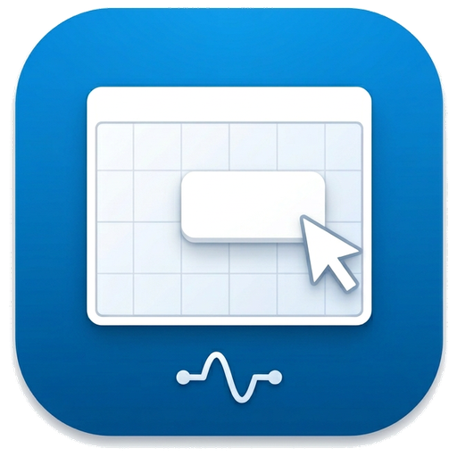
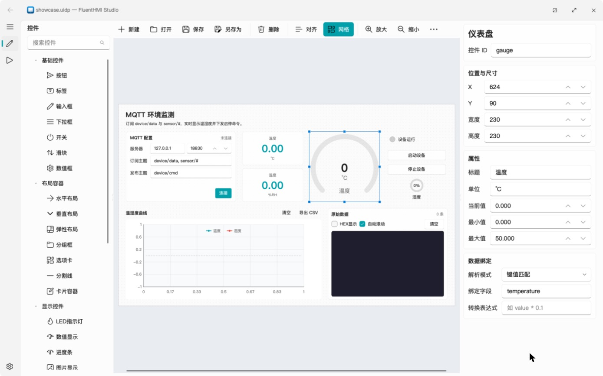
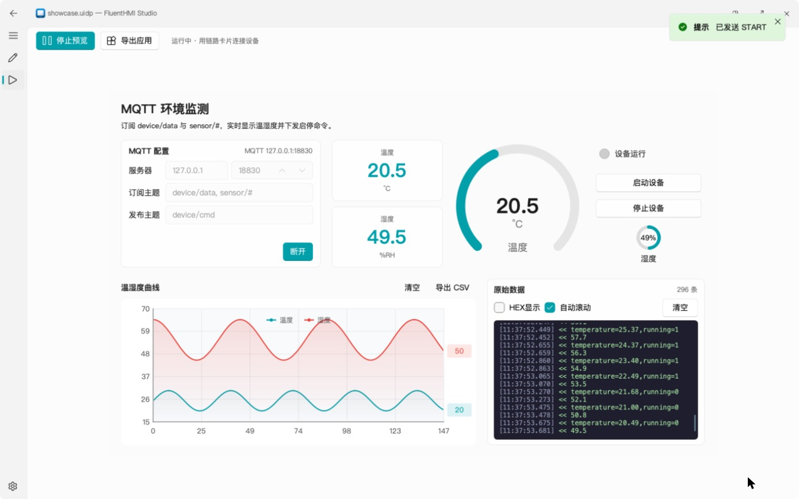

data binding
接收：数据绑定
行文本（键值 / JSON / CSV）、HEX 帧、Modbus RTU、Modbus TCP 四种解析；键值匹配、JSON 路径、HEX 字节提取、Modbus 四种绑定，支持 value * 0.1 这类转换表达式。

FluentHMI Studio C++ 可视化上位机设计器C++ / Qt 6 · 拖拽设计 · 秒级导出
PyQt UI Designer 的 C++/Qt 6 重写版，界面基于 FluentQtWidgets。拖拽控件、配置属性，绑定串口、TCP 或 MQTT 数据，预览运行后直接导出独立应用，不需要 Python 和编译器。
下载信息来自 GitHub Releases，页面会自动检查最新稳定版。

直接打开 .uidp 工程PyQt UI Designer 做好的工程可以直接打开、预览和导出
导出不需要编译器复制预编译的运行器，再放入工程和图片
安装包更小，启动更快Windows 安装包约为 Python 版的三分之一，启动约快一倍
工作流程
设计画布上显示的就是真实的运行时控件。预览和导出的应用把同一批控件挂到同一个运行时上，由它接收链路数据、执行绑定、发送命令，所以预览里看到的就是导出后的效果。
data binding
行文本（键值 / JSON / CSV）、HEX 帧、Modbus RTU、Modbus TCP 四种解析；键值匹配、JSON 路径、HEX 字节提取、Modbus 四种绑定，支持 value * 0.1 这类转换表达式。
commands
文本、HEX、Modbus 三种模式和 {value} 模板；Modbus 命令按每条链路的解析模式自动组 RTU 帧或 MBAP 帧。
EXPORT不打开界面，直接导出应用
$ FluentHMIStudio --export out/ demo.uidpCHECK检查工程，例如 AI 写的工程
$ FluentHMIRuntime demo.uidp --checkSCREENSHOT把工程画面渲染成图片
$ FluentHMIRuntime demo.uidp --theme dark \
--screenshot widgets-dark.png
预览运行
串口、TCP、MQTT 三种链路可以同时连接，收到的数据进入同一套绑定、曲线、表格和日志。预览和导出的应用用的是同一个运行器。
+ / # 通配符订阅，TLS 使用系统证书库，连接成功后断开会自动重连。功能介绍
控件、属性、解析模式、数据绑定和命令编码与 PyQt UI Designer 一一对应，换成原生编译的 C++ 实现，导出也不再需要编译。
29 种控件，网格吸附、缩放、适应窗口、对齐与等距分布；容器支持水平 / 垂直 / 弹性布局、分组框、卡片和选项卡嵌套。浅色、深色和跟随系统主题。
直接读写 .uidp（版本 1.0），控件类型、属性名、默认值和枚举选项与 PyQt UI Designer 一一对应；解析与命令编码规则逐条移植，并有单元测试覆盖。
三种链路可以同时连接。MQTT 每条消息视为一帧，只有一个数值的消息可以直接用主题名绑定；TCP 服务端可接入多个设备。
导出时复制运行器、写入工程和用到的图片，并以应用名命名。导出的应用带着运行器和 Qt，可以直接拷到别的电脑上运行；macOS 导出的应用同样是 universal。
设置页检查更新，也可在启动时检查。下载本平台的安装包并校验 SHA-256，重启或退出时换上新版本；换不上时保留原来的版本。
.uidp 是 JSON 文件。把需求和仓库里的格式说明一起交给 AI，它就能直接写出工程，写完用 FluentHMIRuntime 工程.uidp --check 检查。
版本对比
两者使用同一种 .uidp 工程格式，控件、解析模式、数据绑定和命令编码规则一致；不同之处在实现和导出方式。
| 项目 | FluentHMI Studio 0.1.0 | PyQt UI Designer 0.1.6 |
|---|---|---|
| 实现 | C++17 / Qt 6，原生编译 | Python / PyQt5（Qt 5），用 Nuitka 打包 |
| 导出应用 | 复制预编译的运行器，再放入工程和图片，约 0.3 秒，不需要 Python 和编译器 | 生成 Python 源码，再用 Nuitka 编译；下载的设计器要打包时需另装 Python 与编译工具 |
| 预览与导出 | 预览和导出的应用是同一个运行器 | 预览在设计器内运行，导出的是另外生成的代码 |
| Windows 安装包 | 15.9 MB | 51.7 MB |
| macOS 安装包 | 一个 universal 包，31.1 MB，Apple Silicon 与 Intel 通用；导出的应用同样是 universal | arm64、x64 各一个包，51.3 / 59.9 MB；打包只生成本机架构的程序 |
| 启动到出现窗口 | 0.7–1.1 秒 | 1.5–2.2 秒 |
| 启动后内存 | 71–85 MB | 126–137 MB |
| 更新 | 应用内检查、下载、校验并替换，可设为启动时检查 | 设置页手动检查，有新版本时打开下载页 |
安装包大小取自两者的 GitHub Release。启动时间和内存在同一台 Mac（Apple M5 Pro）上用两个版本的 Apple Silicon 程序测得：空工程，各启动 4 次取后 3 次，内存为窗口出现 5 秒后的常驻内存。导出时间是导出示例工程三次的耗时（0.26–0.41 秒）。
暂未移植的功能
导出可以继续修改的源码工程，以及实时曲线的游标和数据保存 / 加载，目前只有 Python 版提供。需要这些功能时，请继续使用 PyQt UI Designer。
最新稳定版 0.1.0
解压即可运行，无需另装 Qt。包里只有一份 Qt，Studio 和运行器共用；导出的应用会复制运行器及其 Qt。
解压后运行 FluentHMIStudio.exe。Studio 与运行器 FluentHMIRuntime.exe 在同一目录，共用 Qt DLL。
一个包同时支持 Apple Silicon 与 Intel。解压后先把 FluentHMI Studio.app 移到“应用程序”文件夹再打开，在线更新才能直接替换。
下载按钮直接连接 GitHub Release 附件，每个包都提供 .zip.sha256 校验文件。Mac 版只做了 ad hoc 签名，未做 Developer ID 签名与公证，第一次打开需要在“系统设置 → 隐私与安全性”中点“仍要打开”；Windows 版未做 Authenticode 签名，SmartScreen 提示时点“更多信息 → 仍要运行”。 使用说明 从源码构建 English README 查看源代码